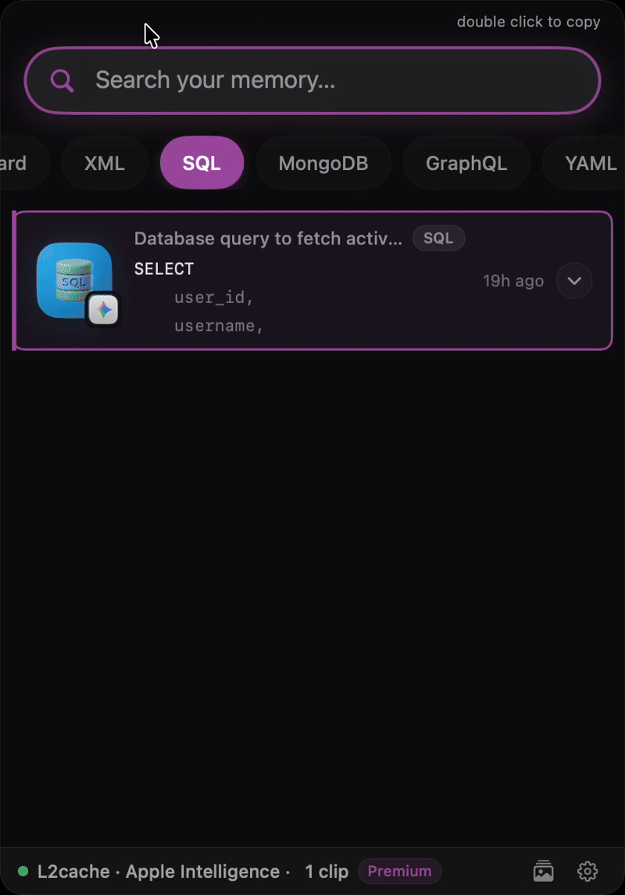
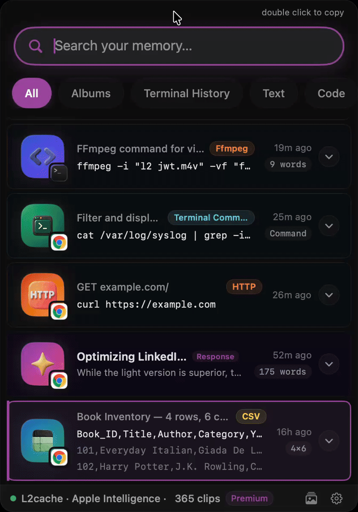
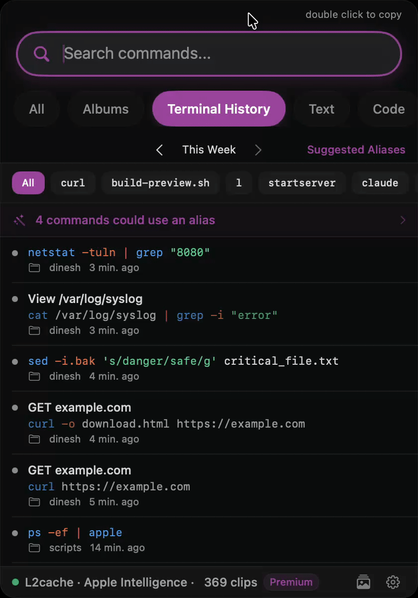

How a Clipboard Manager Can Supercharge Your Developer Workflow
If you write code on a Mac, you probably rely on the native clipboard. Using it is like having a CPU with no cache memory—every time you need data, you do a slow fetch from the disk (re-typing it or digging through browser tabs).
Despite Cmd + C being arguably the most used keyboard shortcut in a developer's arsenal, the clipboard itself remains the most underrated and ignored tool on macOS. Most developers will spend hours tweaking their IDE, terminal, and window manager, but have never even tried to leverage a clipboard manager. They just accept that their copied data disappears the moment they copy something else.
Other clipboard managers (like Maccy or Paste) act like RAM. They give you a ton of storage, but the memory is "dumb." It doesn't understand JSON formatting, can't decode a JWT, and can't run OCR on a stack trace.
That’s why I built L2Cache. If standard clipboards just hold raw ore, L2Cache acts like a miner that effortlessly refines it into gold. It’s the L2 cache for your workflow—an ultra-fast, intelligent memory layer. It doesn't just store data; it acts like the short-term memory of an AI coding agent, letting you instantly format, decode, and transform your messy code with a single click.
Here are five all-too-common stories of daily developer pain, and how a smart clipboard fixes them:
1. No More Tab Hopping for Data Formatting
Last week, I logged a massive JWT in my console. Normally, I'd copy it, open a browser, navigate to
jwt.io, get distracted, and lose my train of thought. With L2Cache, I just clicked "Decode JWT" right
inside the clipboard panel. The payload popped up instantly on-device.

2. Generating Sample Data Without a Browser
I needed to mock a user profile JSON based on a database schema. Usually, I'd copy the SQL, tab over to ChatGPT, prompt it, and copy the result back. Instead, I copied the SQL and ran an AI prompt right inside my clipboard to generate the JSON instantly, without leaving Xcode.

3. Extracting Text from Screenshots
A client emailed a blurry screenshot of an error instead of the text. Rather than manually typing out the stack trace to search it, I just copied the image. L2Cache ripped the raw text out via Apple's Vision framework, and I pasted it straight into Claude two seconds later.

4. The Terminal History Trap
Three months ago, I fixed a bug with an obscure 7-flag ffmpeg command. Yesterday, the bug returned,
and my terminal history was long gone. Because L2Cache auto-tags clips by app, I simply filtered my
clipboard for "Terminal" and found the command sitting safely in my history from March.

5. Passing Context to the Team
Our QA engineer needed to debug a failing endpoint. Instead of digging through notes to find the
curl command, bearer token, and JSON payload, I bundled the last three things I copied into a single
"Clip Chain." He imported it and had my exact testing environment ready instantly.

The Reality of Mac Tooling
| StandardMaccy, Paste | LaunchersRaycast | ScratchpadsBoop | L2Cache | |
|---|---|---|---|---|
| Basic Clipboard History | ||||
| Format JSON, XML, JWTs | Via Plugins | |||
| On-Device OCR for Errors | ||||
| Auto-Detect Terminal History | ||||
| AI Data & SQL Generation | ||||
| Bundle Context (Clip Chains) |
Standard managers like Paste handle basic storage. Scratchpads like Boop are great for formatting, but force window bouncing. AI tools generate code but break your focus.
L2Cache brings the storage of Paste, the transformations of Boop, and on-device OCR into a single, unified layer. It eliminates the tiny, annoying micro-frictions that derail your focus. L2Cache is built natively for macOS, runs locally for privacy, and is free in early access.